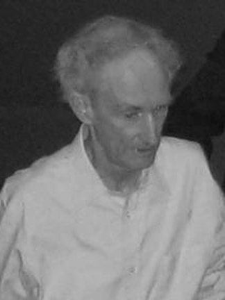

Chaos theory · interactive notes
The logistic map

.jpg){kind=link}
In 1976 the ecologist Robert May showed that one of the simplest population models you can write down is capable of wildly complicated behaviour. The rule takes this generation's population and returns the next one. Nothing in it is random, yet for some settings the result looks like noise.
xnext = r · x · (1 − x)
Here x is the population as a fraction of the most the environment can support, and r is how strongly it grows. Move the sliders and watch 60 generations play out.
Vertical: population x, from 0 (extinct) to 1 (environment full). Horizontal: generation.
What the values mean
- r · growth parameter
- How many times the population would multiply each generation if nothing held it back. This single number decides what kind of behaviour you get. Slider range: 0.5 to 4.
- x · population
- The population as a fraction of the maximum the environment can hold. 0 means extinct, 1 means completely full. This is the vertical axis.
- x₀ · starting population
- The value of x at generation 0. Slider range: 0.01 to 0.99.
- generation
- One application of the rule. Time moves in whole steps, so the dots are the real values and the lines only join them. This is the horizontal axis, 0 to 60.
- Population A
- The population that starts at x₀.
- Population B
- An identical population that starts 0.001 higher, at x₀ + 0.001. It appears when you tick the twin box.
- Behaviour
- What the population does once the first generations have passed. It is worked out by running the rule for several thousand generations and checking whether the values repeat.
- Long-run values
- The value, or values, that the population ends up visiting.
| Range of r | What the population does in the long run |
|---|---|
| below 1 | Dies out. Each generation is smaller than the last. |
| 1 to 3 | Settles on a single value, equal to 1 − 1/r. |
| 3 to 3.449 | Alternates between 2 values. |
| 3.449 to 3.544 | Cycles through 4 values. |
| 3.544 to 3.570 | Cycles through 8, then 16, then 32 values, and so on. |
| 3.570 to 4 | Chaos, with a few narrow windows of order such as a 3-cycle near 3.83. |
Source: R. M. May, “Simple mathematical models with very complicated dynamics”, Nature 261, 459–467 (1976). The code in this repository was generated with Claude (Anthropic).